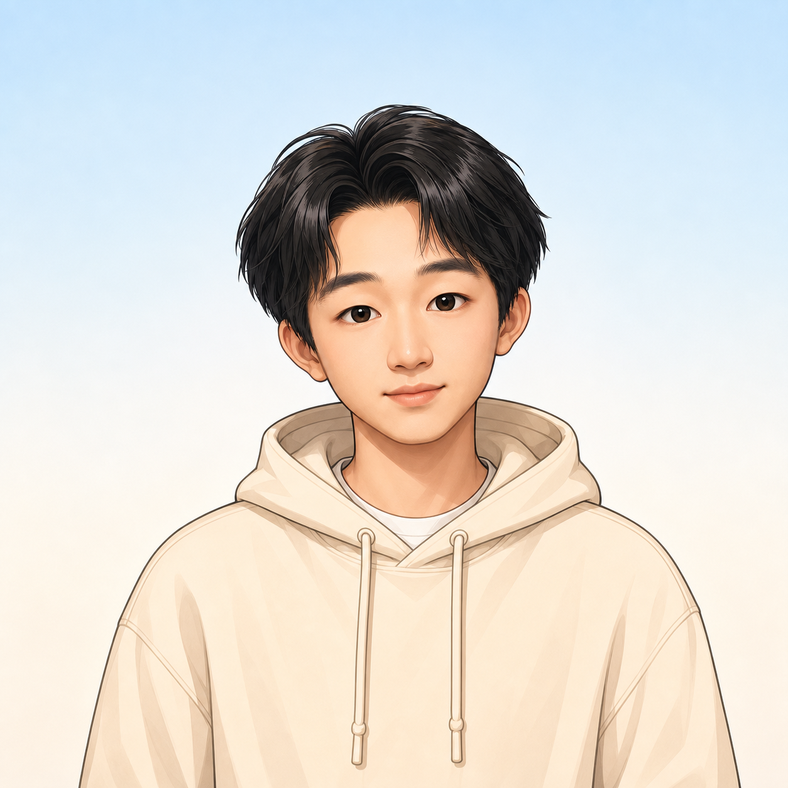

有想法
先理解业务真正卡在哪里，再决定该看什么、怎么拆、往哪走。
你好，我是刘柏杨。
复旦大学国际商务硕士。关注商业分析、策略运营与 AI 工作流。

ABOUT ME
我喜欢把复杂的事情先想清楚，再把它踏踏实实地往前推。
对我来说，好的业务工作不只是给出一个结论，而是把问题接住、把口径说清、把下一步推进下去。我更像一个可靠的中台型伙伴：有判断，也能落地。
先理解业务真正卡在哪里，再决定该看什么、怎么拆、往哪走。
不把阶段判断写成结果，不把猜测当事实，让每个结论经得起追问。
在信息并不完整时先建立可用路径，把协作和行动尽快带起来。
EDUCATION
企业国际化、国际经济、数据方法与 AI 应用。
市场调研、项目研究与现实问题分析训练。
WHAT I WORK ON
做过即时配送相关分析，从总量问题下钻到城市、模式和切换点位，帮助讨论更接近业务现场。
围绕汽车后市场的交易与履约闭环，参与研究、模式拆解、数字券和线下核销机制设计。
持续探索如何把 AI 放进资料整理、口径检查和结果表达，同时保留人的判断与复核。
LET'S TALK